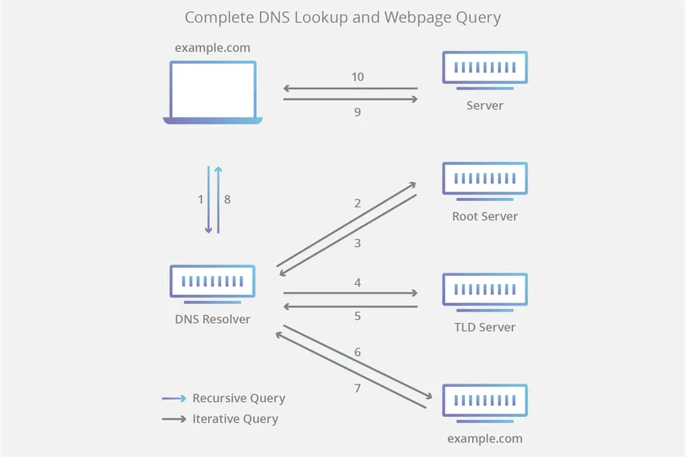

How you get here?
You most likly got here by typing a url into your browser. I you are like the majority of people you probaly used Google or another browser if you want to feel different, but all when you use a URL they are all resolved in the same way. Weather you use Google or Firefox to look up your favorite website they all turn the url into an IP adrress.
What is an IP address?
Note the following is only true for IPv4 not IPv6 or any future versions
An IP is a string of 4 values ranging from 0 to 255. An example IP address would be 127.0.0.1. Each computer connected to the internet has an IP address, including the servers that host websites. Ip addresses are important because computers do not understand URLs and therefore need URLs to be converted into IP addresses. Bonus fact: Routers have their own protocols to find computers based on their IP address, but that is out of scope for this content.
How you URLs Turn into IP Addresses
First off, after the url is typed in your browser the browser will check its local URL to IP address cache and your computer will also check its own cache. These caches are local and are based on previous URL lookups. If the URL you typed in is not in either of these caches then your computer will send out a DNS (Domain Name system) request to its local name server.
The local DNS server is usually your ISP’s (Internet Server Provider) name server or Google’s name server. This server also has a cache of URLs to IPs and will return the IP address to you if it is in the cache. If this is not in the Cache or in any records it will send the request to the TLD(Top Level Domain) name server. A TLD is .com, .net, .uk, or .ae. This TLD name server will then send another name server that should know the IP address or be closer to the server that does know the IP address to the ISP name server. The ISP will then send a request to the name server provided to the ISP’s name server. One of 3 things could happen.
- The server could know the IP address and send it to the ISP name server
- The server could not know the IP address and then it could send the request to the next name server until an IP address is returned and then send this IP address to the name server that sent the request to it.
- The server could not know the IP address and return another name server to the name server that sent the request. It will then be the job of the original name server to send the request to the newly provided name server.
Step 2 and 3 will repeat until the IP address is returned to the computer that sent the request. Once the IP address is returned to the computer the computer will then send the ip request to its router and the router will handle it from there.